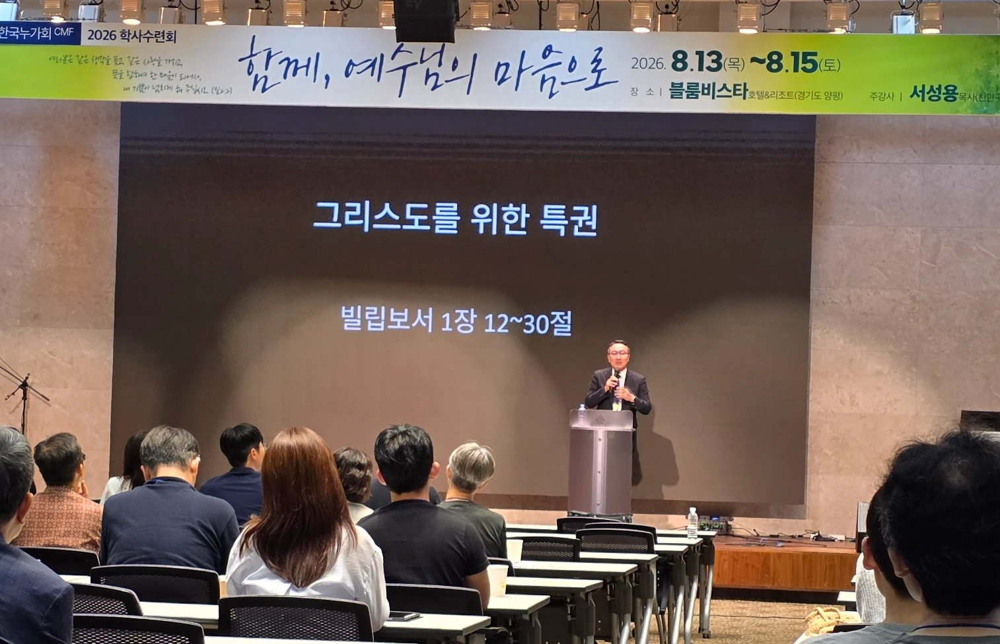
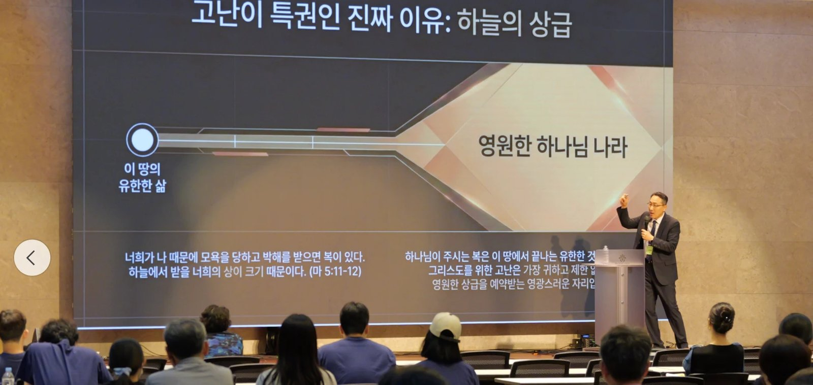

46회 CMF 학사수련회 말씀 1(목 19:30) · 서성용 목사(천안 구성교회) · 본문 빌1:12-30 · 시리즈 「그리스도를 위한 특권」 첫째 강(빌립보서 1·2·3장, 4장은 "숙제")


SECTION 01
개요·핵심 논지
copy
강사는 자신을 신학자도 교수도 아닌 "그냥 목회자"로 소개한다. 그러나 이 소개는 겸양이 아니라 자격 제시다 — 14년 동안 CMF와 함께 의료선교를 12회 다녀온, CMF 바깥에서 CMF를 가장 오래 지켜본 동역자로서 강단에 섰기 때문이다. "제가 제일 잘 아는 선교 단체는 CMF입니다."
핵심 본문은 빌립보서 1:29(새번역)다. 회중과 함께 읽는다.
하나님께서는 여러분에게 그리스도를 위한 특권, 즉 그리스도를 믿는 것뿐만 아니라 또한 그리스도를 위하여 고난을 받는 특권도 주셨습니다. (빌 1:29)
그리스도를 믿는 것이 특권이라는 데는 누구나 동의한다. 설교의 과녁은 그다음이다 — 성경은 고난받는 것도 특권이라 부른다. 세상의 특권은 남보다 받는 혜택(좋은 조건·성공·편안함)이고 고난은 피해야 할 불행이지만, 바울은 감옥에서 이 순서를 뒤집는다. 이것이 수사가 아님을 강사는 세 겹으로 보인다: 빌립보 교회의 역사(기적과 고난이 함께 세운 교회), 바울 자신의 궤적(고난을 알고도 가는 길), 그리고 창조 질서와 종말론(고난 없이 영광 없음).
SECTION 02
구조·전개
copy
| 단계 | 소재 | 도달점 |
|---|---|---|
| 자기소개 | 1988 전북대 철학과 입학 · 교회 청년부의 누가들 · 백인기 회장과의 동역 | CMF와 14년, 의료선교 12회 — "말씀으로 여러분을 도우라고 보내신 게 아닌가" |
| 키 텍스트 | 빌 1:29 (새번역, 회중 통독) | 두 가지 특권 — 믿는 특권 + 고난받는 특권 |
| 특권의 통념 | 비즈니스 클래스 경험담 | 세상의 특권 = 혜택·편안함, 고난 = 피해야 할 불행 |
| 빌립보 교회의 기원 | 행16 — 막힌 길, 마게도냐 환상, 루디아, 귀신 들린 소녀, 투옥, 간수 | 기적과 고난이 함께 세운 교회 — 순종의 끝이 꽃길이 아니었다 |
| 로마 감옥의 바울 | 두 부류의 전도자 (빌 1:15-18) | "전파되는 것은 그리스도니 나는 기뻐하리라" |
| 가치관의 근거 | "살든지 죽든지 유익"(빌 1:20-21) | 천국을 경험한 사람에게 고난은 더 이상 장애물이 아니다 |
| 창조 질서 | No cross, no crown — 월드컵·골학·출산·양육 | 세상 이치에도 고난 없이 영광이 없다 |
| 종말론 | 마5:11-12 · 순교자 · 상급 | 고난은 하나님 나라 상급의 필수 조건 |
| 한정 | "내 안에 사시는 이가 그리스도이기 때문에" | 모든 고난이 아니라 그리스도 때문에 받는 고난이 특권이다 |
| 적용 | 캠퍼스·직장·가정·인간관계·의정 갈등 | "당신이 지금 겪고 있는 특권의 현장은 어디입니까" |
| 결단 | 찬양 「내 안에 사는 이」 · 침묵 기도 · 기도합주회 | 고난을 기쁨으로 감당하겠다는 결단 |
★ KEY INSIGHT
핵심 개념·주장 ↔ 근거
copy
SECTION 04
강사와 CMF — 14년 동역의 자리
copy
1988년 전북대 철학과(신학의 전 단계)에 입학한 강사는 익산의 교회 청년부에서 CMF를 처음 만났다. 청년부의 절반 가까이가 누가들이었고, 그 중심에 백인기(현 한국누가회 회장, 이번 수련회 대회장)가 있었다. 두 사람은 "나중에 목사와 의사가 되어 함께 의료선교를 하자"는 비전을 나눴고, 서로 멀리 떨어져 살던 세월을 지나 2008년 한 교회에서 만나 같은 가족이 되었으며, 2012년부터 천안 성환읍의 목장교회(성도 50~60명)에서 실제로 그 비전을 살았다. 이후 14년간 의료선교 12회 — 2012 필리핀 팔로를 시작으로, 2017 세네갈(왕복 6일·사역 3일, 이슬람 지역 — 선교사가 7년간 만나지 못했던 사람 100여 명을 의료선교 3일에 만났다), 코로나 이후 2023 필리핀 바기오 재개까지. 체첸 지역 CMF 파송 선교사도 돕고 있다.
저는 바깥에서 여러분을 보면, 여러분이 정말 함께 고난받는 공동체라는 걸 알 수 있어요.
이 이력이 설교의 관점을 만든다. "저는 바깥에서 여러분을 보면, 여러분이 정말 함께 고난받는 공동체라는 걸 알 수 있어요."
★ KEY INSIGHT
빌립보 교회 — 기적과 고난이 함께 세운 교회
copy
바울의 2차 선교여행 목적지는 아시아 최대 도시 에베소였다. 성령은 그 길을 거듭 막으셨고, 환상(마게도냐 사람의 "우리를 도우라")으로 빌립보로 이끄셨다. 강사는 여기서 청중의 경험에 다리를 놓는다 — "여러분도 가기 싫은 병원으로 하나님이 보내실 때가 있잖아요. 순종하면 꽃길이 있어야 하지 않습니까." 그런데 빌립보는 꽃길이 아니었다. 로마 퇴역 군인들의 계획도시, 황제 숭배가 강한 곳, 유대인 열 명이 없어 회당조차 없는 도시였다.
그 척박함 속에서 교회는 두 사건으로 세워진다. 강가 기도처에서 만난 루디아의 회심과 가정 교회 개방 — 그리고 점치는 소녀의 축귀가 주인들의 이권을 건드려 당한 억울한 투옥. 바울은 로마 시민권 한마디면 매를 피할 수 있었지만 침묵한 채 맞고 갇혔고, 한밤의 찬송과 지진, 열린 옥문 앞에서 탈출하지 않았다. 강사의 읽기로는 간수를 얻기 위해서다 — 자기가 나가면 누군가 죽는다는 것을 알았기에. 그렇게 루디아의 가정과 간수의 가정 위에 교회가 섰다. 하나님의 주권적 개입(기적)과 억울한 고난이 처음부터 한 몸이었던 교회 — 이것이 "고난받는 특권"이라는 말이 빌립보 교인들에게 공허하지 않았던 이유다.
SECTION 06
두 부류의 전도자 — 바울의 기쁨의 문법
copy
로마 감옥에서 바울이 들은 소식에는 쓴 것이 섞여 있었다. 순수한 사랑으로 복음을 전하는 이들과, 바울을 시기하여 그의 갇힘에 괴로움을 더하려는 의도로 전하는 이들(빌 1:15-17). 강사는 목회자로서의 솔직한 고백을 겹친다 — "저 성도는 왜 우리 교회만 나오나요, 자연스럽게 떠나면 좋을 텐데" 기도했던 시절, 그리고 어떤 선한 일에도 지지 80%와 반대 20%가 있다는 "2080"의 현실. 그러나 바울의 결론은 다른 차원이다.
겉치레로 하나 참으로 하나 무슨 방도로 하든지 전파되는 것은 그리스도니 이로써 나는 기뻐하고 또한 기뻐하리라 (빌 1:18)
이것이 가능한 근거를 강사는 바울의 가치관 전환에서 찾는다. "살든지 죽든지 내 몸에서 그리스도가 존귀하게 되게 하려 하나니 이는 내게 사는 것이 그리스도니 죽는 것도 유익함이라"(1:20-21). 살리는 것이 직업인 의료인에게 "죽는 것도 유익"은 역설이지만, 천국을 경험한 사람의 가치관은 이 땅에 있지 않다. 죽음도 유익하다는 사람에게 고난은 더 이상 장애물이 될 수 없다.
SECTION 07
고난은 왜 특권인가 — 세 겹의 근거
copy
내가 편안하면 전도 안 하는 게 제일 편안한 거예요.
① 복음의 통로. 강사의 목회 실측이 근거다 — 새가족들에게 "어떻게 예수님을 영접하게 되셨느냐" 물으면, 답은 설교도 프로그램도 아니라 먼저 믿은 자들의 섬김이다. 섬김은 다른 말로 희생이고 고난이다 — 불편함을 자발적으로 자처하는 것. "내가 편안하면 전도 안 하는 게 제일 편안한 거예요." 초기 한국에 온 선교사들의 묘원(양화진)에 묻힌 아이들의 무덤이 같은 논리의 역사적 증거로 제시된다 — 그 고난이 있었기에 오늘의 한국 교회가 있다. 오히려 교회는 고난받고 핍박받을 때 사회적 영향력이 커졌고, 편안한 특권은 복음 전파의 방해가 됐다.
② 창조 질서. 세상 이치에도 고난 없는 영광은 없다 — 축구 선수의 눈물 젖은 훈련, 골학 시즌에 밤새워 뼈 이름을 외우는 의대생("피골이 상접해서, 불쌍해요"), 그리고 출산. 강사는 세 자녀의 분만실에 모두 들어갔던 경험으로 말한다 — 그 고통이 있었기에 아이가 더 귀하다. 문제는 질서가 아니라 우리가 고난을 특권으로 받아들이지 못하는 것이다.
③ 종말론적 상급. "너희가 나 때문에 모욕을 당하고 박해를 받으면 복이 있다. 하늘에서 받을 너희의 상이 크기 때문이다"(마5:11-12). 뒤집으면 — 예수 때문에 받는 고난이 없다면 상급도 없다. 이 땅의 특권을 다 누리면 "네 상을 이미 네가 다 받았다"는 말을 듣는다. 계시록에서 가장 빛나는 이들은 순교자들인데, "꼭 죽어야만 순교가 아니다. 자존심을 내려놓고 의지를 꺾는, 죽는 것보다 힘든 일들이 있다."
강사는 두 특권을 나란히 놓는다 — 우리가 이미 아는 믿음의 특권(구원의 기쁨·영생의 소망·기도 응답·믿음의 공동체)과, 그 위에 있는 고난의 특권(예수의 남은 고난을 채움·영혼 구원의 통로·생명의 면류관). 이 둘을 모두 수용할 때 특권은 비로소 온전해진다.
SECTION 08
한정 — 모든 고난이 특권은 아니다
copy
설교 후반의 중요한 제동이다. "내 안에 사는 게 나예요, 예수님이 아니라 — 그러니까 내가 나를 위해서 받는 고난은 특권이 아니에요. 그리스도 때문에 받는 고난이 특권이라고요." 특권인 고난은 복음 때문에, 영혼 구원 때문에, 하나님의 선한 뜻 때문에 받는 고난으로 한정된다. CMF의 기원이 이 한정의 실례로 소환된다 — CMF는 처음부터 학원 복음화와 세계 선교를 위해, 기꺼이 불편함을 자처하겠다고 모인 공동체다. "46년 전에 시작했던 이 시작을 잊지 않으셨으면 좋겠습니다."
SECTION 09
달란트와 고난
copy
"다섯 달란트 받은 사람은 다섯 달란트 남겨야 돼요. 달란트를 많이 받았기 때문에 고난이 더 많은 거예요. 억울해하지 마세요." 교회·가정·직장·CMF에서 겹겹의 역할을 감당하는 학사들의 고단함을 강사는 먼저 "참 대단하다"고 인정한 뒤, 그 많은 역할 자체를 달란트의 증거로 재해석한다. 바울이 고난을 많이 받은 것도 달란트가 많았기 때문이라는 것.
SECTION 10
실천 적용
copy
"당신이 지금 겪고 있는 특권의 현장은 어디입니까." 강사가 짚는 현장들:
- 캠퍼스 — 공부 자체의 혹독함 속에서 복음을 전하는 이중의 짐.
- 직장 — 모두가 내가 CMF인 것을 안다. 그래서 감당해야 하는 불이익, 신앙 양심을 지키기 위한 희생과 손해, 더 많이 섬겨야 하는 자리. 의정 갈등의 시기에는 "그리스도인이 아니라면 한번 엎어 버리고 싶은" 마음을 참아내고, 그런 마음이 아닌데도 오해받는 고난까지.
- 가정 — 1세대 크리스천이 홀로 감당하는 오해, 가족을 위해 묵묵히 지는 짐.
- 인간관계 — 그리스도인이 비난받는 시대(식당에서 대표 기도조차 전도에 방해가 될까 조용히 하는 시대)에, 누군가를 전도하려면 더 많은 희생이 필요하다.
너무 억울해하지 마세요. 하나님이 여러분을 사랑하셔서 그런 특권을 주신 겁니다.
이 모든 자리에서의 결론: "너무 억울해하지 마세요. 하나님이 여러분을 사랑하셔서 그런 특권을 주신 겁니다." 설교는 「내 안에 사는 이」 찬양과 침묵 기도, 그리고 찬양 인도자의 기도회(You Are My God · Faithful One, 마 28:18-20의 약속)로 닫힌다.
SECTION 11
종합
copy
시리즈 첫 강으로서 이 설교는 정의(定義)를 바꾸는 일을 한다. 특권이라는 단어의 내용을 혜택에서 고난으로 교체해 놓아야, 둘째 강의 자기 비움(빌 2장)과 셋째 강(빌 3장)이 설 자리가 생긴다. 개회예배가 "무엇을 자랑하는가"로 판을 깔았다면(개회예배 나의자랑나의기쁨), 말씀 1은 그 자랑의 값 — 십자가만 자랑하는 사람이 치르게 되는 고난 — 을 특권이라는 이름으로 긍정한다. 갈 6:14의 "십자가 자랑"과 빌 1:29의 "고난받는 특권"은 사실상 같은 삶의 두 이름이다.
설교의 힘은 논증보다 자격에서 나온다. 고난이 특권이라는 명제는 편안한 사람이 말하면 폭력이 되는데, 이 강사는 시골 교회 목회자로 14년간 CMF와 함께 선교 현장을 다닌 이력, 개척 시절이 "가장 힘들었지만 하나님을 가장 깊게 경험한 시간"이었다는 자기 서사, 그리고 "최선을 다하라는 말을 쉽게 하고 싶지 않다"는 목회적 조심스러움 위에서 말한다. 또한 의정 갈등이라는 청중의 현재 고난을 직접 호명함으로써, 이 설교가 일반론이 아니라 2026년의 한국 의료인 학사들에게 하는 말임을 분명히 한다.
함께 더 생각할 지점
- 상급 동기의 자리. "천국에서 상급 없는 사람이 면류관 가진 사람을 영원히 봐야 한다"는 서사는 결단을 촉구하는 강력한 수사이지만, 은혜의 논리(구원도 상급도 결국 선물)와 어떻게 조화되는지 함께 붙들 필요가 있다. 강사 자신도 구원은 전적 은혜임을 전제하고 있다.
- "고난이 많음 = 달란트가 많음"의 범위. 위로의 문법으로는 힘이 있으나, 역으로 "고난이 적으면 달란트가 적다"로 읽히지 않도록 범위를 한정해서 들을 지점이다. 욥의 친구들의 오류(고난의 크기로 사람을 판단)와 반대 방향의 등식이지만 구조는 닮아 있다.
- 바울이 옥문 앞에서 남은 동기. 간수를 전도하기 위해 남았다는 읽기는 강사 스스로 "제가 볼 때"라고 밝힌 묵상적 추정이다. 본문(행 16:28)이 말하는 것과 설교적 상상의 경계를 구분해 읽으면 좋다.
- 자처한 고난과 구조적 고난. 선교의 자발적 불편(자처하는 고난)과 의정 갈등 같은 구조적 고난은 성격이 다르다. 후자를 1:29의 "그리스도를 위한 고난"으로 읽는 데는 해석적 다리가 하나 더 필요하다 — 그 상황 안에서 그리스도인답게 반응하느라 받는 고난이라는 다리.
교차 참조
- 46회 CMF학사수련회 — 수련회 허브. 말씀 2(빌 2장)·말씀 3(빌 3장)으로 이어진다.
- 개회예배 나의자랑나의기쁨 — 같은 날 오후. 자랑의 재정의 → 특권의 재정의.
- 빌1 — 1:18(전파되는 것은 그리스도)·1:21(사는 것이 그리스도)·1:29(두 특권).
- 행16 — 빌립보 교회의 기원 서사.
- 의료선교 — 교회-CMF 협력 모델(목장교회·천안 구성교회 14년)의 드문 실례.
원본
📖 원본: 수련회 생중계 전사 + 강사 제공 설교 슬라이드 21장.